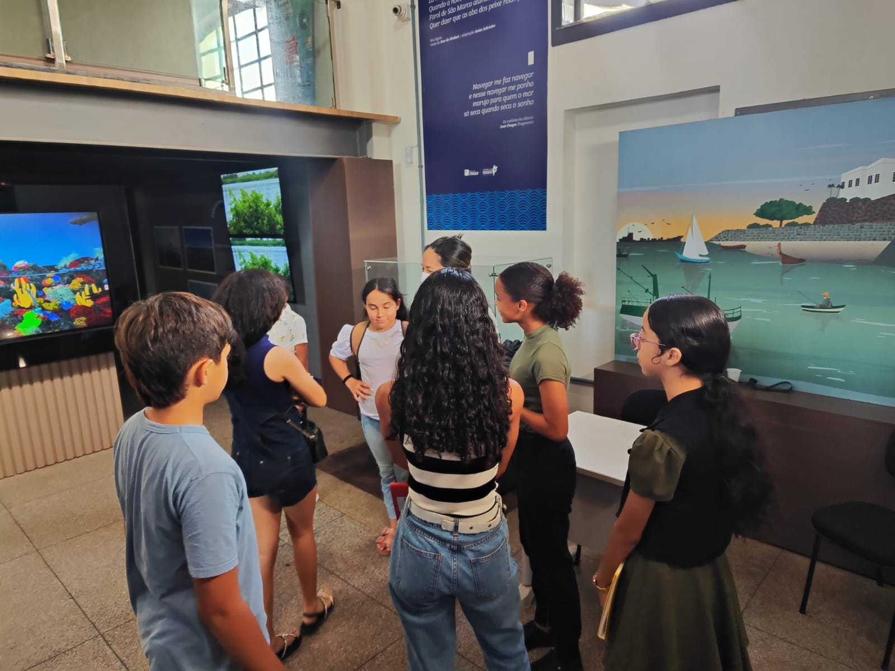
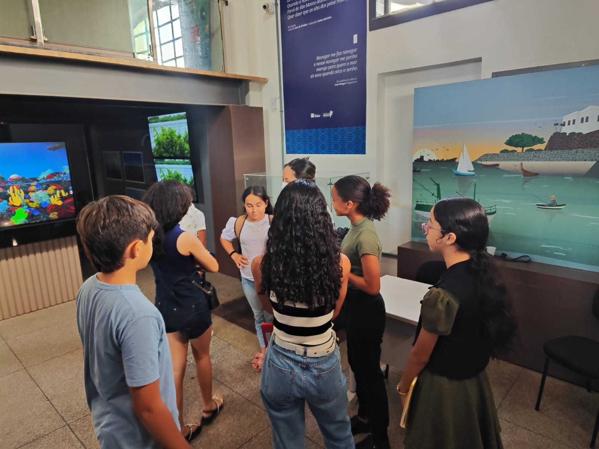

MERGULHAR EM UM PROBLEMA ENFRENTADO POR PESSOAS QUE EXPLORAM O OCEANO
- ↘ PESQUISAR POR PROBLEMAS DE PROFISSIONAIS QUE EXPLORAM OS OCEANOS
- ↘ ENTENDER QUEM SÃO OS PROFISSIONAIS E VERIFICAR POSSÍVEIS CONEXÕES PARA CONHECER AS ÁREAS
- ↘ IDENTIFICAR POSSÍVEIS PROBLEMAS RELACIONADOS ÀS ÁREAS
De acordo com o primeiro contato que a equipe teve para desenvolver o projeto de inovação, buscamos entender o caderno e analisar as sugestões dos profissionais que estão no caderno de engenharia. A partir da leitura do caderno identificamos o problema em dispositivos pelo alto custo para pesquisa; equipamentos de localização de espécie sendo fixo e móvel e recipientes para armazenar coletas de amostras de água com pouco risco de contaminação.
Reunião com a Patrícia Martins, formada em oceanografia na UFMA.
- Requisitos absurdos para exercer o trabalho.
- Vale a pena trabalhar com pescadores.
- A migração ocorre por fatores como alimentação e reprodução.
- A área da oceanografia é desvalorizada e desconhecida.
- A ação humana causa grande impacto no ecossistema marinho e aquecimento global.
- Começar a ampliar a as pesquisas em inglês.
Visita à refesa
No dia 25/10/2024 conhecemos a exposição International Sawfish Day Brasil. A exposição acontece em São Luís - MA, o grupo de estudos de Elasmobrânquios Amazônico vinculado a UNIVERSIDADE FEDERAL DO MARANHÃO (UFMA) realizou a exposição com ênfase na espécie de raia Espadarte.
Destacamos: Métodos conservativos na biologia marinha Preservação evolutiva Impactos humanos no ambiente aquático Acidentes com animais aquáticos Equipamentos de coleta A dificuldade do transporte de amostras.
 

Com base na conversa com o Profissional Jorge
Destacamos
- Métodos conservativos na biologia marinha
- Preservação evolutiva
- Impactos humanos no ambiente aquático
- Acidentes com animais aquáticos
- Equipamentos de coleta
- A dificuldade do transporte de amostras.
O que vamos fazer ?
Ampliar nossa pesquisa para área específica do profissional seguindo a sua linha de pesquisa, analisar os destaques feitos com base nos objetivos.